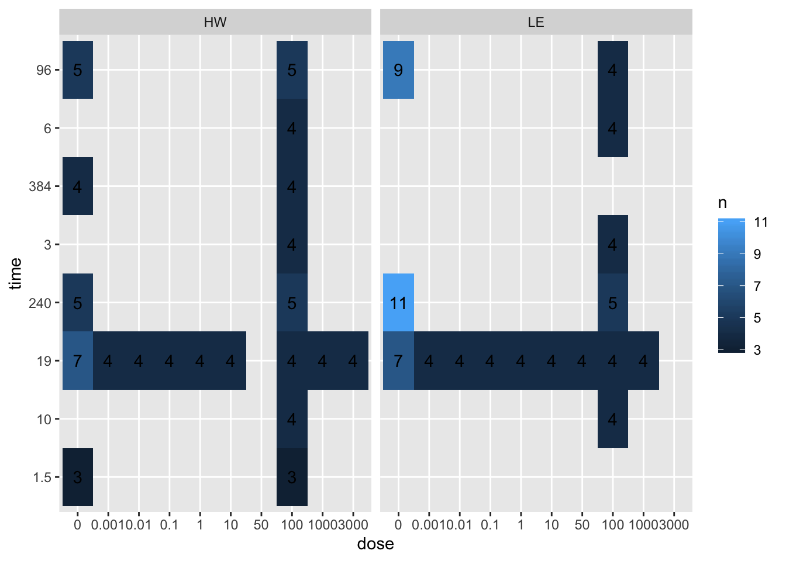
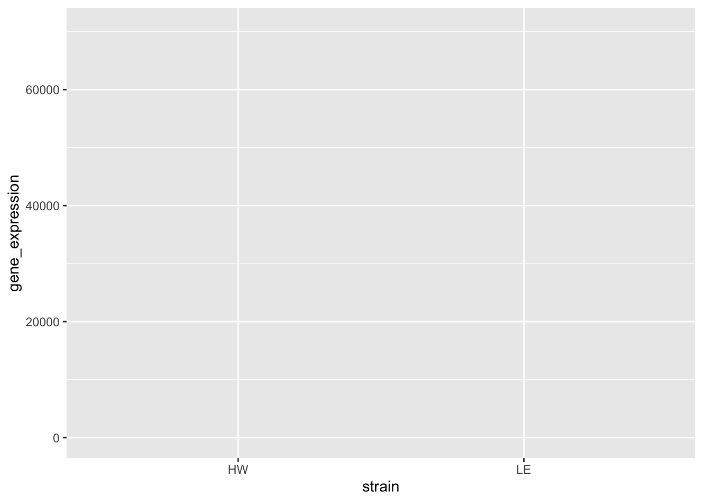
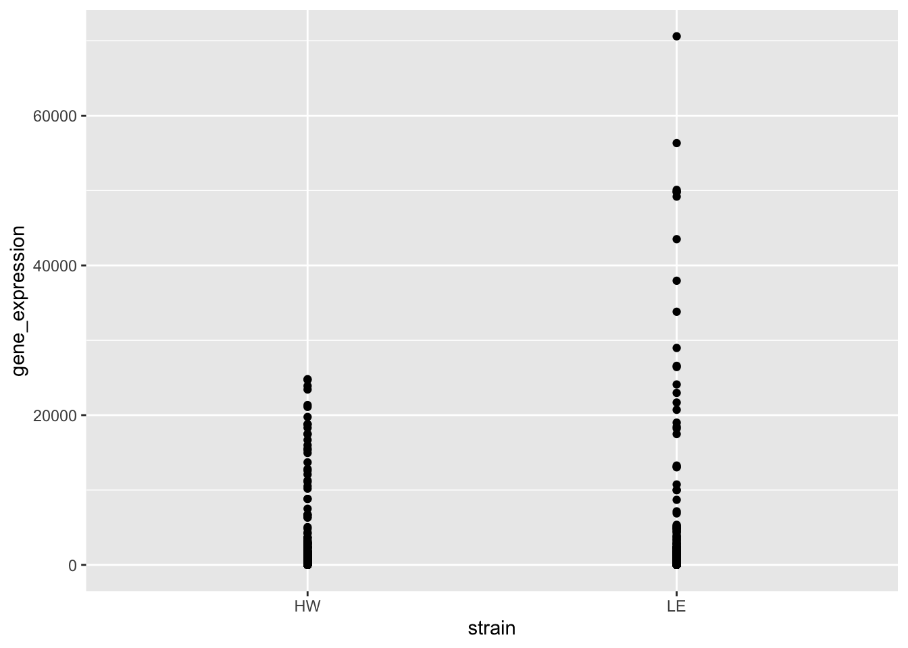
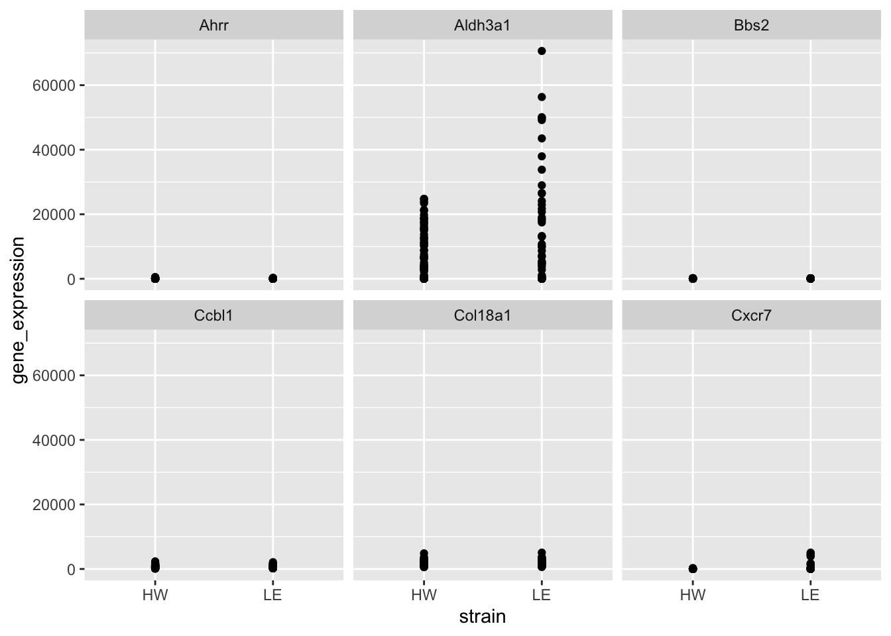
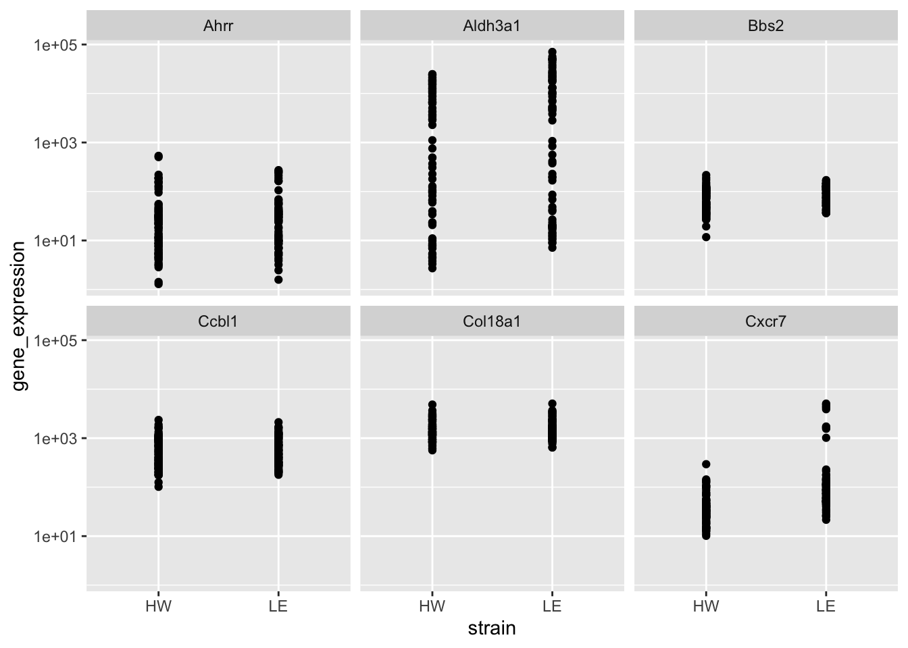
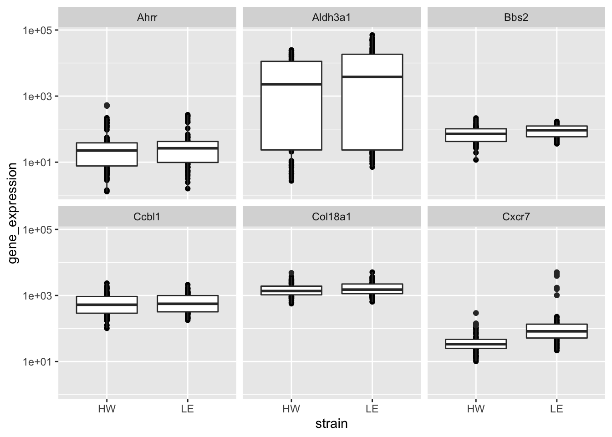
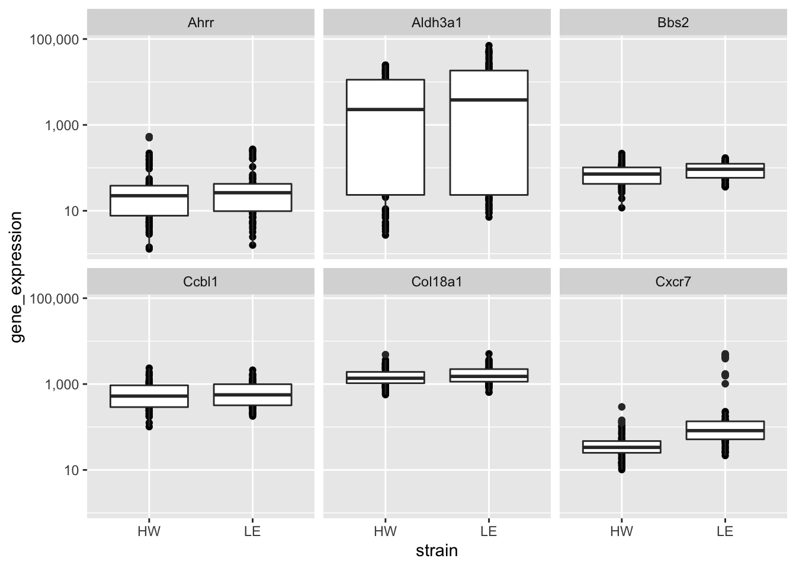

session2
Kevin Wang and Garth Tarr
05/11/2019
Learning outcomes of this session
- left_join data
- Making basic plots using
ggplot2: tile plot and scatter plots - Joining two datasets together (
left_join) pivot_longerandpivot_widerto reshape data for plotting purposes
Loading packages
library(tidyverse)Loading cleaned sample data
session1_data = read_csv(file = "data/clean_sample_data.csv")## Parsed with column specification:
## cols(
## strain = col_character(),
## sample = col_character(),
## time = col_double(),
## dose = col_double()
## )Reading in gene expression data (top 10 rows)
raw_ge_data = read_delim(file = "data/GSE43251_NanoString_non-normalized.txt", delim = "\t", n_max = 6)## Parsed with column specification:
## cols(
## .default = col_double(),
## GB_ACC = col_character(),
## GENE_SYMBOL = col_character()
## )## See spec(...) for full column specifications.# raw_ge_data = read_tsv(file = "data/GSE43251_NanoString_non-normalized.txt", n_max = 5)
clean_ge_data = raw_ge_data %>%
dplyr::select(-1)
clean_ge_data## # A tibble: 6 x 155
## GENE_SYMBOL HW1 HW2 HW3 HW4 HW5 HW6 WW41 WW42
## <chr> <dbl> <dbl> <dbl> <dbl> <dbl> <dbl> <dbl> <dbl>
## 1 Ahrr 1.30e1 1.42e0 1.29 9.96e0 7.55e0 5.45e0 29.7 30.2
## 2 Aldh3a1 5.22e0 8.53e0 7.74 3.07e2 6.55e1 8.18e1 4194. 6712.
## 3 Bbs2 3.39e1 4.55e1 32.2 6.97e1 5.29e1 4.80e1 90.6 73.4
## 4 Ccbl1 2.37e2 2.43e2 175. 2.76e2 3.18e2 2.44e2 842. 704.
## 5 Cxcr7 2.35e1 2.70e1 15.5 6.83e1 3.40e1 4.03e1 42.0 34.3
## 6 Col18a1 1.69e3 1.92e3 918. 2.37e3 1.68e3 2.40e3 2149. 1551.
## # … with 146 more variables: WW45 <dbl>, WW46 <dbl>, WW47 <dbl>,
## # WW48 <dbl>, LE100 <dbl>, LE101 <dbl>, LE102 <dbl>, LE4D51 <dbl>,
## # LE4D53 <dbl>, LE4D56 <dbl>, WW37 <dbl>, WW38 <dbl>, WW39 <dbl>,
## # WW40 <dbl>, WW43 <dbl>, WW44 <dbl>, HW4D12 <dbl>, HW4D2 <dbl>,
## # HW4D6 <dbl>, LE4D57 <dbl>, LE52 <dbl>, LE53 <dbl>, LE54 <dbl>,
## # LE55 <dbl>, WW1 <dbl>, WW2 <dbl>, WW3 <dbl>, WW4 <dbl>, HW4D16 <dbl>,
## # HW4D20 <dbl>, LE10D32 <dbl>, LE10D27 <dbl>, LE10D28 <dbl>,
## # LE10D35 <dbl>, LE10D37 <dbl>, LE80 <dbl>, LE81 <dbl>, WW49 <dbl>,
## # WW50 <dbl>, WW51 <dbl>, HW4D3 <dbl>, HW4D4 <dbl>, LE82 <dbl>,
## # LE83 <dbl>, LE88 <dbl>, LE89 <dbl>, LE90 <dbl>, LE91 <dbl>,
## # WW25 <dbl>, WW26 <dbl>, WW27 <dbl>, WW28 <dbl>, HW10D10 <dbl>,
## # HW10D11 <dbl>, HW10D14 <dbl>, HW10D17 <dbl>, HW10D5 <dbl>, HW10 <dbl>,
## # HW4D15 <dbl>, HW4D19 <dbl>, HW4D7 <dbl>, HW7 <dbl>, HW8 <dbl>,
## # HW9 <dbl>, HW10D13 <dbl>, HW10D18 <dbl>, HW10D1 <dbl>, HW10D8 <dbl>,
## # HW10D9 <dbl>, LE64 <dbl>, LE65 <dbl>, LE66 <dbl>, LE67 <dbl>,
## # LE68 <dbl>, LE69 <dbl>, LE70 <dbl>, LE71 <dbl>, LE72 <dbl>,
## # LE73 <dbl>, LE74 <dbl>, LE75 <dbl>, LE76 <dbl>, LE77 <dbl>,
## # LE78 <dbl>, LE79 <dbl>, LE84 <dbl>, LE85 <dbl>, LE86 <dbl>,
## # WW10 <dbl>, WW11 <dbl>, WW12 <dbl>, WW13 <dbl>, WW14 <dbl>,
## # WW15 <dbl>, WW16 <dbl>, WW17 <dbl>, WW18 <dbl>, WW19 <dbl>, WW8 <dbl>,
## # WW9 <dbl>, …left_join sample data
ge_sample_data = data.frame(
sample = colnames(clean_ge_data)[-1],
ge_data_available = "yes"
)
joined_sample_data = left_join(session1_data, ge_sample_data, by = "sample")## Warning: Column `sample` joining character vector and factor, coercing into
## character vectorjoined_sample_data## # A tibble: 165 x 5
## strain sample time dose ge_data_available
## <chr> <chr> <dbl> <dbl> <fct>
## 1 HW HW1 1.5 0 yes
## 2 HW HW2 1.5 0 yes
## 3 HW HW3 1.5 0 yes
## 4 HW HW4 1.5 100 yes
## 5 HW HW5 1.5 100 yes
## 6 HW HW6 1.5 100 yes
## 7 HW WW45 3 100 yes
## 8 HW WW46 3 100 yes
## 9 HW WW47 3 100 yes
## 10 HW WW48 3 100 yes
## # … with 155 more rowsDT
joined_sample_data %>%
DT::datatable()tidyr::pivot_longer the gene expression data
ge_data_long = clean_ge_data %>%
tidyr::pivot_longer(
cols = -GENE_SYMBOL,
names_to = "sample",
values_to = "gene_expression")
ge_data_long## # A tibble: 924 x 3
## GENE_SYMBOL sample gene_expression
## <chr> <chr> <dbl>
## 1 Ahrr HW1 13.0
## 2 Ahrr HW2 1.42
## 3 Ahrr HW3 1.29
## 4 Ahrr HW4 9.96
## 5 Ahrr HW5 7.55
## 6 Ahrr HW6 5.45
## 7 Ahrr WW41 29.7
## 8 Ahrr WW42 30.2
## 9 Ahrr WW45 18.1
## 10 Ahrr WW46 22.4
## # … with 914 more rowslong_sample_ge_data = session1_data %>%
left_join(ge_data_long, by = "sample") %>%
dplyr::filter(!is.na(GENE_SYMBOL)) %>%
janitor::clean_names()
long_sample_ge_data## # A tibble: 924 x 6
## strain sample time dose gene_symbol gene_expression
## <chr> <chr> <dbl> <dbl> <chr> <dbl>
## 1 HW HW1 1.5 0 Ahrr 13.0
## 2 HW HW1 1.5 0 Aldh3a1 5.22
## 3 HW HW1 1.5 0 Bbs2 33.9
## 4 HW HW1 1.5 0 Ccbl1 237.
## 5 HW HW1 1.5 0 Cxcr7 23.5
## 6 HW HW1 1.5 0 Col18a1 1694.
## 7 HW HW2 1.5 0 Ahrr 1.42
## 8 HW HW2 1.5 0 Aldh3a1 8.53
## 9 HW HW2 1.5 0 Bbs2 45.5
## 10 HW HW2 1.5 0 Ccbl1 243.
## # … with 914 more rowsggplot2 visualisation
long_sample_ge_data %>%
ggplot()
long_sample_ge_data %>%
ggplot(aes(x = strain,
y = gene_expression))
long_sample_ge_data %>%
ggplot(aes(x = strain,
y = gene_expression)) +
geom_point()
long_sample_ge_data %>%
ggplot(aes(x = strain,
y = gene_expression)) +
geom_point() +
facet_wrap(~gene_symbol)
long_sample_ge_data %>%
ggplot(aes(x = strain,
y = gene_expression)) +
geom_point() +
facet_wrap(~gene_symbol) +
scale_y_log10()
long_sample_ge_data %>%
ggplot(aes(x = strain,
y = gene_expression)) +
geom_point() +
geom_boxplot() +
facet_wrap(~gene_symbol) +
scale_y_log10()
long_sample_ge_data %>%
ggplot(aes(x = strain,
y = gene_expression)) +
geom_point() +
geom_boxplot() +
facet_wrap(~gene_symbol) +
scale_y_log10(labels = scales::comma)
tidyr::pivot_wider the gene expression data
wide_sample_ge_data = long_sample_ge_data %>%
tidyr::pivot_wider(names_from = "gene_symbol",
values_from = "gene_expression")Visualisation
wide_sample_ge_data %>%
ggplot(aes(x = Ahrr,
y = Cxcr7,
colour = strain)) +
geom_point() +
scale_x_log10(labels = scales::comma) +
scale_y_log10(labels = scales::comma) +
geom_smooth(method = "lm")
write_csv(long_sample_ge_data, path = "data/long_sample_ge_data.csv")
write_csv(wide_sample_ge_data, path = "data/wide_sample_ge_data.csv")Session Info
sessionInfo()## R version 3.6.1 (2019-07-05)
## Platform: x86_64-apple-darwin15.6.0 (64-bit)
## Running under: macOS Mojave 10.14.6
##
## Matrix products: default
## BLAS: /Library/Frameworks/R.framework/Versions/3.6/Resources/lib/libRblas.0.dylib
## LAPACK: /Library/Frameworks/R.framework/Versions/3.6/Resources/lib/libRlapack.dylib
##
## locale:
## [1] en_AU.UTF-8/en_AU.UTF-8/en_AU.UTF-8/C/en_AU.UTF-8/en_AU.UTF-8
##
## attached base packages:
## [1] stats graphics grDevices utils datasets methods base
##
## other attached packages:
## [1] visdat_0.5.3 readxl_1.3.1 janitor_1.2.0 forcats_0.4.0
## [5] stringr_1.4.0 dplyr_0.8.3 purrr_0.3.3 readr_1.3.1
## [9] tidyr_1.0.0 tibble_2.1.3 ggplot2_3.2.1 tidyverse_1.2.1
##
## loaded via a namespace (and not attached):
## [1] Rcpp_1.0.2 lubridate_1.7.4 lattice_0.20-38
## [4] assertthat_0.2.1 zeallot_0.1.0 digest_0.6.22
## [7] utf8_1.1.4 mime_0.7 R6_2.4.0
## [10] cellranger_1.1.0 backports_1.1.5 evaluate_0.14
## [13] httr_1.4.1 pillar_1.4.2 rlang_0.4.1
## [16] lazyeval_0.2.2 rstudioapi_0.10 DT_0.9
## [19] rmarkdown_1.16 labeling_0.3 htmlwidgets_1.5.1
## [22] munsell_0.5.0 shiny_1.4.0 broom_0.5.2
## [25] compiler_3.6.1 httpuv_1.5.2 modelr_0.1.5
## [28] xfun_0.10 pkgconfig_2.0.3 htmltools_0.4.0
## [31] tidyselect_0.2.5 fansi_0.4.0 crayon_1.3.4
## [34] withr_2.1.2 later_1.0.0 grid_3.6.1
## [37] nlme_3.1-141 jsonlite_1.6 xtable_1.8-4
## [40] gtable_0.3.0 lifecycle_0.1.0 magrittr_1.5
## [43] scales_1.0.0 cli_1.1.0 stringi_1.4.3
## [46] promises_1.1.0 snakecase_0.11.0 xml2_1.2.2
## [49] ellipsis_0.3.0 generics_0.0.2 vctrs_0.2.0
## [52] tools_3.6.1 glue_1.3.1 hms_0.5.2
## [55] crosstalk_1.0.0 fastmap_1.0.1 yaml_2.2.0
## [58] colorspace_1.4-1 rvest_0.3.4 knitr_1.25
## [61] haven_2.1.1